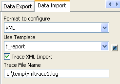
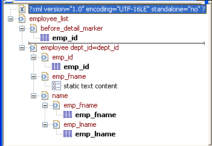
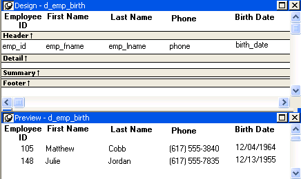

You can select XML as a file type in the dialog box that displays when you select Rows>Import in the DataWindow painter. (The Preview view must be open to enable the Rows>Import menu item.)
You can also import data from an XML document or string using the ImportFile, ImportString, or ImportClipboard methods. These methods have an optional first parameter that enables you to specify the type of data to be imported.
Data can be imported with or without a template. To import data without a template, the data must correspond to the DataWindow column definition. The text content of the XML elements must match the column order, column type, and validation requirements of the DataWindow columns.
 Composite, OL E, and Graph DataWindow objects Composite, O LE, and Graph DataWindow objects cannot be imported
using a template. You must use the default format. Graph objects
must also be imported using the default format.
Composite, OL E, and Graph DataWindow objects Composite, O LE, and Graph DataWindow objects cannot be imported
using a template. You must use the default format. Graph objects
must also be imported using the default format.
If the XML document or string from which you want to import data does not correspond to the DataWindow column definition, or if you want to import attribute values, you must use a template.
If a schema is associated with the XML to be imported, you must create a template that reflects the schema.
For complex, nested XML with row data in an iterative structure, you may need to design a structure that uses several linked DataWindow definitions to import the data. Each DataWindow must define the structure of a block of iterative data with respect to the root element. Importing the data into the DataWindow objects would require multiple import passes using different import templates.
For data that does not conform to an iterative row data structure or has additional complexities, you can use the PBDOM parser to handle the data on a node-by-node basis. For more information, see Application Techniques and the PowerBuilder Extension Reference .
The XML import template can be defined in the Export/Import Template view for XML. If you are defining a template for use only as an import template, do not include DataWindow expressions, text, comments, and processing instructions. These items are ignored when data is imported.
Only mappings from DataWindow columns to XML elements and attributes that follow the Starts Detail marker in the template are used for import. Element and attribute contents in the header section are also ignored. If the Starts Detail marker does not exist, all element and attribute to column mappings within the template are used for import. For more information about the Starts Detail marker, see "The Detail Start element".
An XML import template must map the XML element and attribute names in the XML document to DataWindow column names, and it must reflect the nesting of elements and attributes in the XML.
The order of elements and attributes with column reference content in the template does not have to match the order of columns within the DataWindow, because import values are located by name match and nesting depth within the XML. However, the order of elements and attributes in the template must match the order in which elements and attributes occur in the XML. Each element or attribute that has column reference content in the template must occur in each row in the XML document or string. The required elements and attributes in the XML can be empty.
If an element or attribute does not occur in the XML document, the DataWindow import column remains empty.
The data for the DataWindow is held in the columns of the data table. Some data columns, such as those used for computed fields, may not have an associated control. To import data into a column that has no control reference, add a child DataWindow expression that contains the column name.
 Remove tab characters When you select a column name in the DataWindow expression dialog box,
tab characters are added before and after the name. You should remove
these characters before saving the expression.
Remove tab characters When you select a column name in the DataWindow expression dialog box,
tab characters are added before and after the name. You should remove
these characters before saving the expression.
For XML import using a template, element and attribute contents in the header section are ignored. However, if the Starts Detail marker does not exist, all element and attribute to column mappings within the template are used for import. This has the following implications for DataWindow objects with group headers:
 Nested groups cannot be imported If the Group DataWindow has nested groups, the data cannot
be imported successfully even if the Starts Detail marker in the
import template is turned off.
Nested groups cannot be imported If the Group DataWindow has nested groups, the data cannot
be imported successfully even if the Starts Detail marker in the
import template is turned off.
DataWindow columns cannot be referenced twice for import. A second column reference to a DataWindow column within an XML import template is ignored.
An XML element or attribute name whose content references a DataWindow column for import must be unique within the level of nesting. It cannot occur twice in the template at the same nesting level.
The names of all templates for the current DataWindow object display in the Use Template drop-down list on the Data Import page in the Properties view.

 Using export templates for import If you have already defined an export template for a DataWindow object,
you can use it as an import template, but only the mapping of column
names to element attribute names is used for import. All other information
in the template is ignored.
Using export templates for import If you have already defined an export template for a DataWindow object,
you can use it as an import template, but only the mapping of column
names to element attribute names is used for import. All other information
in the template is ignored.
The template you select in the list box is used to conform the XML imported to the specifications defined in the named template. Selecting a template from the list sets the DataWindow object's Import.XML.UseTemplate property. You can also modify the value of the Import.XML.UseTemplate property dynamically in a script.
The Data Import page also contains a check box that enables you to create a trace log of the import. See "Tracing import".
This example uses a DataWindow object that includes the columns emp_id, emp_fname, emp_lname, and dept_id. The template used in this example includes only these columns. Any other columns in the DataWindow remain empty when you import using this template.
To illustrate how template import works, create a new template that has one element in the header section, called before_detail_marker. This element contains a column reference to the emp_id column.
The Detail Start element, employee, has an attribute, dept_id, whose value is a control reference to the column dept_id. It also has three children:

The template exports and imports the dept_id DataWindow column using the attribute of the employee element. It exports and imports the emp_id, emp_fname, and emp_lname columns using the column references in the elements. The following shows the beginning of the XML exported using this template:
<?xml version="1.0" encoding="UTF-16LE" standalone="no"?>
<employee_list>
<before_detail_marker>102</before_detail_marker>
<employee dept_id="100">
<emp_id>102</emp_id>
<emp_fname>static text content</emp_fname>
<name>
<emp_fname>Fran</emp_fname>
<emp_lname>Whitney</emp_lname>
</name>
</employee>
<employee dept_id="100">
<emp_id>105</emp_id>
<emp_fname>static text content</emp_fname>
<name>
<emp_fname>Matthew</emp_fname>
<emp_lname>Cobb</emp_lname>
</name>
</employee>
...
The exported XML can be reimported into the DataWindow columns dept_id, emp_id, emp_fname, and emp_lname. Before importing, you must set the import template on the Data Import page in the Properties view or in a script using the DataWindow object's Import.XML.UseTemplate property.
The following items are exported, but ignored on import:
If you change the nesting of the emp_fname and emp_lname elements inside the name element, the import fails because the order of the elements and the nesting in the XML and the template must match.
When there is no import template assigned to a DataWindow object with the Use Template property, PowerBuilder attempts to import the data using the default mechanism described in this section.
The text between the start and end tags for each element can be imported if the XML document data corresponds to the DataWindow column definition. For example, this is the case if the XML was exported from PowerBuilder using the default XML export template.
The text content of the XML elements must match the column order, column type, and validation requirements of the DataWindow columns. (The same restriction applies when you import data from a text file with the ImportFile method).
All element text contents are imported in order of occurrence. Any possible nesting is disregarded. The import process ignores tag names of the elements, attributes, and any other content of the XML document.
Empty elements (elements that have no content between the start and end tags) are imported as empty values into the DataWindow column. If the element text contains only white space, carriage returns, and new line or tab characters, the element is treated as an empty element.
Any attributes of empty elements are ignored.
If the element has no text content, but does contain comments, processing instructions, or any other content, it is not regarded as an empty element and is skipped for import.
The three XML documents that follow all show the same result when you select Rows>Import in the DataWindow painter of if ImportFile is called with or without default arguments for start and end column, start and end row, and DataWindow start column.
The DataWindow object has five columns: emp_id, emp_fname, emp_lname, phone, and birth_date.

This example contains two rows, each with five elements that match the column order, type, and validation requirements for the DataWindow object.
<?xml version="1.0"?>
<d_emp_birth_listing>
<d_emp_birth_row>
<element_1>105</element_1>
<element_2>Matthew</element_2>
<element_3>Cobb</element_3>
<element_4>6175553840</element_4>
<element_5>04/12/1960</element_5>
</d_emp_birth_row>
<d_emp_birth_row>
<element_1>148</element_1>
<element_2>Julie</element_2>
<element_3>Jordan</element_3>
<element_4>6175557835</element_4>
<element_5>11/12/1951</element_5>
</d_emp_birth_row>
</d_emp_birth_listing>
In this example, the elements are not contained in rows, but they still match the DataWindow object.
<?xml version="1.0"?>
<root_element>
<element_1>105</element_1>
<element_2>Matthew</element_2>
<element_3>Cobb</element_3>
<element_4>6175553840</element_4>
<element_5>04/12/1960</element_5>
<element_6>148</element_6>
<element_7>Julie</element_7>
<element_8>Jordan</element_8>
<element_9>6175557835</element_9>
<element_10>11/12/1951</element_10>
</root_element>
The comments and processing instructions in this example are not imported. The nesting of the <first> and <last> elements within the <Name> element is ignored.
<?xml version="1.0"?>
<root_element>
<!-- some comment -->
<row_element><?process me="no"?>105<name Title="Mr">
<first>Matthew</first>
<last>Cobb</last>
</name>
<!-- another comment -->
<phone>6175553840</phone>
<birthdate>04/12/1960</birthdate>
</row_element>
<row_element>148<name Title="Ms">
<first>Julie</first>
<last>Jordan</last>
</name>
<phone>6175557835</phone>
<birthdate>11/12/1951</birthdate>
</row_element>
</root_element>
All three XML documents produce this result:
| emp_id | emp_fname | emp_lname | phone | birth_date |
|---|---|---|---|---|
| 105 | Matthew | Cobb | 6175553840 | 04/12/1960 |
| 148 | Julie | Jordan | 6175557835 | 11/12/1951 |
This example uses the same DataWindow object, but there are two empty elements in the XML document. The first has no content, and the second has an attribute but no content. Both are imported as empty elements.
<?xml version="1.0"?>
<root_element>
<!-- some comment -->
<row_element>
<?process me="no"?>105<name Title="Mr">
<first>Matthew</first>
<!-- another comment -->
<last>Cobb</last>
</name>
<empty></empty>
<birthdate>04/12/1960</birthdate>
</row_element>
<row_element>148<name Title="Ms">
<empty attribute1 = "blue"></empty>
<last>Jordan</last>
</name>
<phone>6175557835</phone>
<birthdate>11/12/1951</birthdate>
</row_element>
</root_element>
The XML document produces this result:
| emp_id | emp_fname | emp_lname | phone | birth_date |
|---|---|---|---|---|
| 105 | Matthew | Cobb | 04/12/1960 | |
| 148 | Jordan | 6175557835 | 11/12/1951 |
When you import data from XML with or without a template, you can create a trace log to verify that the import process worked correctly. The trace log shows whether a template was used and if so which template, and it shows which elements and rows were imported.
To create a trace log, select the Trace XML Import check box on the Data Import page in the Properties view and specify the name and location of the log file in the Trace File Name box. If you do not specify a name for the trace file, PowerBuilder generates a trace file with the name pbxmtrc.log in the current directory.
You can also use the Import.XML.Trace and Import.XML.TraceFile DataWindow object properties.
If you use ImportClipboard or ImportString to import the data, you must specify XML! as the importtype argument. For example:
ImportString(XML!, ls_xmlstring)
If you omit the importtype argument, the trace file is not created. You do not need to specify the importtype argument if you useImportFile.
The following trace log shows a default import of the department table in the EAS Demodatabase:
/*--------------------------------------------------*/
/* 09/10/2005 18:26 */
/*--------------------------------------------------*/
CREATING SAX PARSER.
NO XML IMPORT TEMPLATE SET - STARTING XML DEFAULT IMPORT.
DATAWINDOW ROWSIZE USED FOR IMPORT: 3
ELEMENT: dept_id: 100
ELEMENT: dept_name: R & D
ELEMENT: dept_head_id: 501
--- ROW
ELEMENT: dept_id: 200
ELEMENT: dept_name: Sales
ELEMENT: dept_head_id: 902
--- ROW
ELEMENT: dept_id: 300
ELEMENT: dept_name: Finance
ELEMENT: dept_head_id: 1293
--- ROW
ELEMENT: dept_id: 400
ELEMENT: dept_name: Marketing
ELEMENT: dept_head_id: 1576
--- ROW
ELEMENT: dept_id: 500
ELEMENT: dept_name: Shipping
ELEMENT: dept_head_id: 703
--- ROW
The following trace log shows a template import of the department table. The template used is named t_1. Notice that the DataWindow column dept_id is referenced twice, as both an attribute and a column. The second occurrence is ignored for the template import, as described in "Restrictions". The Detail Start element has an implicit attribute named __pbband which is also ignored.
/*---------------------------------------------------*/
/* 09/10/2005 18:25 */
/*---------------------------------------------------*/
CREATING SAX PARSER.
USING XML IMPORT TEMPLATE: t_1
XML NAMES MAPPING TO DATAWINDOW IMPORT COLUMNS:
ATTRIBUTE: /d_dept/d_dept_row NAME: '__pbband'
>>> RESERVED TEMPLATE NAME - ITEM WILL BE IGNORED
ATTRIBUTE: /d_dept/d_dept_row/dept_id_xml_name NAME: 'dept_id'
DATAWINDOW COLUMN: 1, NAME: 'dept_id'
ELEMENT: /d_dept/d_dept_row/dept_id_xml_name
>>> DUPLICATE DATAWINDOW COLUMN REFERENCE: 1, NAME: 'dept_id' - ITEM WILL BE IGNORED
ELEMENT: /d_dept/d_dept_row/dept_head_id
DATAWINDOW COLUMN: 3, NAME: 'dept_head_id'
ELEMENT: /d_dept/d_dept_row/dept_name
DATAWINDOW COLUMN: 2, NAME: 'dept_name'
ATTRIBUTE: /d_dept/d_dept_row/dept_id_xml_name NAME: 'dept_id': 100
ELEMENT: /d_dept/d_dept_row/dept_head_id: 501
ELEMENT: /d_dept/d_dept_row/dept_name: R & D
--- ROW
ATTRIBUTE: /d_dept/d_dept_row/dept_id_xml_name NAME: 'dept_id': 200
ELEMENT: /d_dept/d_dept_row/dept_head_id: 902
ELEMENT: /d_dept/d_dept_row/dept_name: Sales
--- ROW
ATTRIBUTE: /d_dept/d_dept_row/dept_id_xml_name NAME: 'dept_id': 300
ELEMENT: /d_dept/d_dept_row/dept_head_id: 1293
ELEMENT: /d_dept/d_dept_row/dept_name: Finance
--- ROW
ATTRIBUTE: /d_dept/d_dept_row/dept_id_xml_name NAME: 'dept_id': 400
ELEMENT: /d_dept/d_dept_row/dept_head_id: 1576
ELEMENT: /d_dept/d_dept_row/dept_name: Marketing
--- ROW
ATTRIBUTE: /d_dept/d_dept_row/dept_id_xml_name NAME: 'dept_id': 500
ELEMENT: /d_dept/d_dept_row/dept_head_id: 703
ELEMENT: /d_dept/d_dept_row/dept_name: Shipping
--- ROW